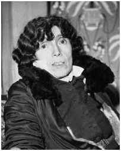
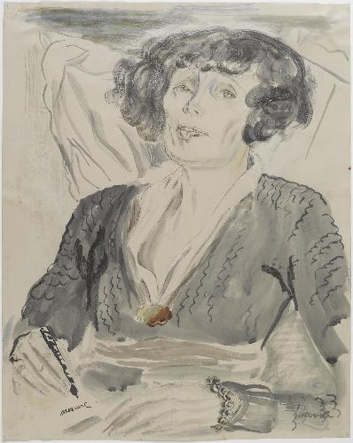
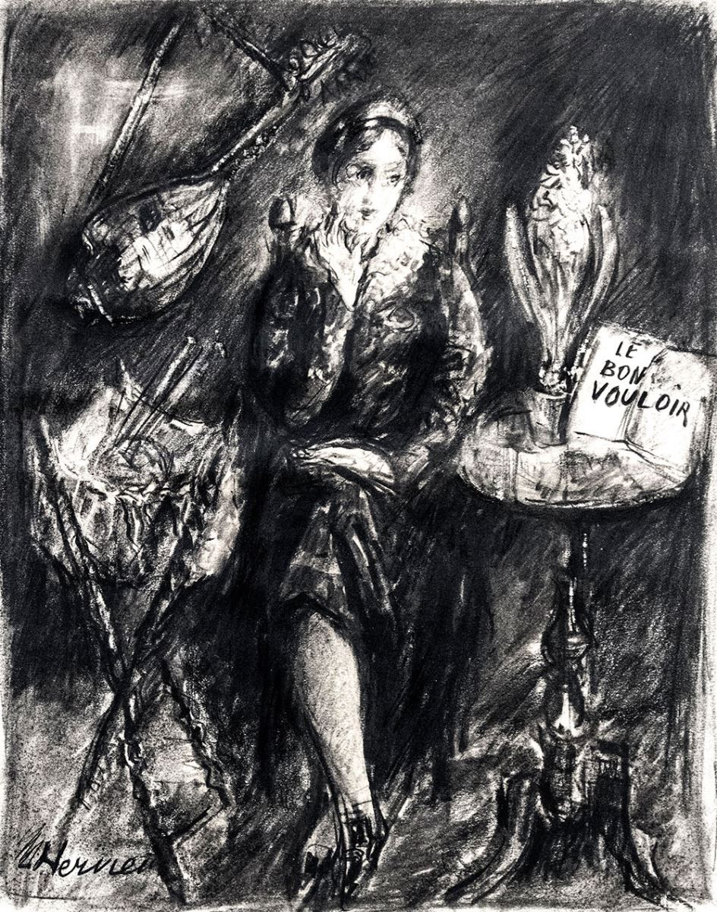
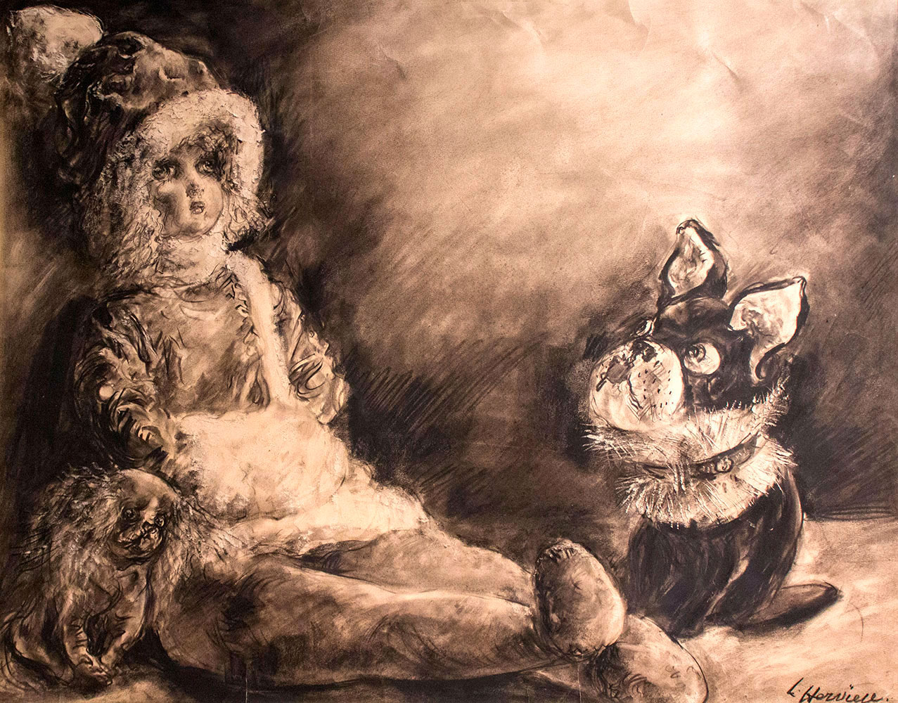

LOUISE HERVIEU
Tôi đã đề nghị với Romieux giới thiệu Louise Hervieu ở đài phát thanh Lausanne: tôi sẽ phỏng vấn bà và thu thập những chứng ngôn của những người quen biết và quí mến bà.
Tôi biết rằng bà đã phải vô nhà dưỡng lão Petits Prés và bà đã trên sáu mươi lăm tuổi, vậy nếu người ta muốn lưu trữ tiếng nói của bà trong các văn khổ thì lúc này là lúc nên thu băng ngay đi.
Tôi cần nói thêm rằng sở dĩ tôi muốn thực hiện buổi phát thanh đó vì tôi nghĩ cần phải nhắc mọi người nhớ lại bà là người ra sao, đã chiến đấu ra sao, để danh của bà khỏi chìm vào bóng tối.
Louise Hervieu sinh ở Alençon nhưng suốt đời bà vẫn thích xứ Thụy Sĩ hơn cả. Khi gợi cảnh núi rừng Thụy Sĩ giọng của bà thật nồng nàn, nên thơ, trái hẳn với cái vẻ lãnh đạm của bà, như có môt phép mầu nào đó đã làm cho bà thay đổi hẳn đi.

 *
*
Ở Alençon, bà theo học trường vẽ tại tỉnh vì nữ sĩ đó trước hết là một họa sĩ có tài. Bà bắt đầu vẽ vào khoảng 1905, triển lãm họa phẩm lần đầu năm 1910, nhưng thất bại. Rồi tới năm 1915, phòng triển lãm Bernheim Jeune để ý tới bà, thích những bức họa bút chì hơn là những bức sơn dầu của bà.
Từ đó bà đã tìm được con đường phải theo và chỉ chuyên vẽ bằng bút chì và than.
Claude Roger Marx trong một cuốn viết về bà đã khen rằng con người xanh xao ốm yếu đó có một sức mạnh lạ lùng khi cúi xuống tờ giấy trắng, dày, láng chóa mắt, dùng miếng than vẽ để diễn nỗi khát khao trong lòng mình.
Viện Bảo tàng Nghệ thuật hiện đại bày mấy bức này của bà: Chiếc ghế bành đỏ (1929), Ephèbe ở trên giường bệnh khi tắt nghỉ (1929), Hoa anh đào (1934)...
Những tranh minh họa của bà cũng được trân trọng và những hình trong tập thơ Fleurs du Mal của Baudelaire được coi là danh tác.
Rồi bỗng nhiên, năm 1936, bà nổi danh nữ sĩ nhờ được giải thưởng Fémina, về tiểu thuyết nhan đề là Sangs (Máu).
Tiểu thuyết đó tàn nhẫn, có tính cách tranh đấu làm cho ta kinh ngạc, tác giả tố cáo những tàn phá do nọc di truyền của bệnh giang mai, gây cho một nhóm người. Tiếp theo là những cuốn Le crime (Tội lỗi) 1937, Le Malade vous parle (Bệnh nhân nói với chúng ta) 1953, Reminiscence (Hồi ức), 1945, La Rose de Sang (Bông hồng màu máu) 1953.
Tất cả các tác phẩm đó đều đeo đuổi một mục đích, đều vang lên một tiếng báo nguy.
Trong thời gian đó, Louise Hervieu đã sáng lập “Hội Louise Hervieu để lập sổ Sức khỏe”.
Chính bà là nạn nhân của sự di truyền bệnh giang mai, nên bà hăng hái, kiên nhẫn dùng ngòi bút để ghi lại thảm kịch, rồi lại vận động tận lực để sau này, những cặp vợ chồng nào đã lỡ bị bệnh đó thì biết mà đề phòng, đừng truyền cái hại của nọc độc qua những đứa trẻ vô tội.
Bà đã thành công, vì ở Pháp, luật pháp đã buộc nam nữ phải khám sức khỏe trước khi cưới nhau.
Bà chưa kịp được biết tin đó thì đã qui tiên.
Năm 1952, khi tôi lại nhà dưỡng lão Petits Prés lần đầu tiên thì tôi thấy trong mấy năm trước đó, bệnh đã tàn phá bà ghê gớm. Nửa mù, nửa bị tê liệt, bà phải rời căn nhà của bà ở đường Cherche Midi và ngưng hểt cả mọi hoạt động.
Nhà dưỡng lão đó kể ra cũng tạm ở được, hễ trời nắng ráo thì các ông già bà cả bận đồng phục, đi bách bộ dưới ánh mặt trời. Ban Giám đổc và các nữ y tá, biết danh tiếng của bà lại thương hại bà bệnh tật, chịu mọi sự cay đắng của cuộc đời, nên đối với bà rất nhã nhặn, nhân từ. Nhưng ta thử tưởng tượng tình cảnh của bà: một nghệ sĩ tài hoa như vậy, trước kia được bạn bè vồn vã quí mến, nay phải rời căn nhà của mình, dù chẳng sang trọng gì, nhưng cũng vẫn là căn nhà riêng mà bà đã lựa chọn, trang hoàng, phải xa lánh những nét mặt quen thuộc, không được thấy họ quây quần chung quanh mình nữa, để lại đây sống thui thủi trong một căn phòng chẳng phải
của ai cả, như thể bị tước lột hết, cướp đoạt hết cái khung cảnh, cái lẽ sống của mình.
Ai ở trong cảnh đó mà không nát lòng!
Mới đầu bà tiếp tôi một cách rụt rè, ngại ngùng, rồi chỉ một lát sau, bà tỏ ra vui vẻ, tự nhiên, và từ đó luôn luôn có nhiệt tình, thiện cảm với tôi.
Lần đó tôi dắt theo con gái tôi tên là Edwige, nó đương viết cho một tờ báo có định kỳ về Thanh niên. Bà Louise Hervieu thoạt thấy nó đã mến nó liền, gọi nó là Iris brun (Hoa diên vĩ màu nâu), và từ đó lần nào gặp tôi cũng hỏi thăm về nó.
Lần sau tôi trở lại để thu băng cuộc phỏng vấn mà bà vui vẻ cho phép liền; kế đó tôi trở lại thăm bà lấy cớ là để cám ơn bà. Chính trong lần thứ ba này bà kể cho tôi nghe tình bằng hữu của bà với Francis Carco và Michel Simon.
Tôi báo cho Francis Carco biết trước, ông bằng lòng nhắc chuyện cũ về bà trong buổi phát thanh; vì vậy ông lại thăm bà và làm cho bà được hưởng một lúc vui trong mấy năm cuối cùng của bà.
Hôm đó bà cũng nói với tôi về một tác phẩm chưa in mà bà đắc ý lắm, nhưng muốn in thì phải vận động mà bà không còn đủ sức để vận động nữa. Tôi đề nghị với bà để tôi thử giúp bà xem, bà thất bại mà tôi thành công cũng chưa biết chừng.
Tôi bèn lại nhà xuất bản Plon, nói chuyện với ông Bataillard; ông này nhã nhặn, tốt bụng, chấp nhận đề nghị của tôi liền. Tôi tả hình ảnh khổ não của Louise Hervieu cho ông nghe, ông cảm động; ông biết rằng những tác phẩm trước của bà đã thành công rực rỡ cho nên chú ý ngay tới cuốn nàv.
Sau đó là buổi phát thanh trên đài Lausanne và bà Louise Hervieu gởi cho tôi bức thư dưới đây nét chữ ngòng ngoèo, tỏ rằng mắt bà đã hư mà tay bà cũng yếu.
Ngày mùng 7 tháng tư năm 1952
Nhà Dưỡng Lão Petits - Prés,
Bà Marianne thân mến,
Sức khỏe của tôi lại sụt xuống thêm vài nấc và tôi thường nằm dài, không đủ sức tiếp khách nữa.
Không thể khác được, số kiếp tôi như vậy thì tôi phải đi tới cùng đường.
(...) Do một linh tính kỳ dị (tôi đã báo cho bà biết, nhưng bà đã lộn ngày), tôi được nghe buổi phát thanh của bà. Tôi cảm động lắm. Bà đã giới thiệu tôi một cách rất nhã nhặn dễ thương. Tôi xin cảm ơn bà!... Tôi đã thấy lại được tấm lòng cao cả, đẹp đẽ của Carco... Nhưng giọng của chị Louise sao mà nhỏ thế, tội nghiệp chị.
Những người ở chung quanh tôi nghe thấy đều khóc cả, còn những bạn khác không được nghe thì lớn tiếng đòi được đọc bản phát thanh, chắc... cũng để khóc nữa.
Bà Marianne Monestier thân mến, làm ơn nói giùm cho tôi với những vị nào coi về việc đó và gởi cho tôi vài bản... Tôi không biết phải gởi thư cho ai để hỏi mua. Đặc biệt là ông Giám đốc nhà dưỡng lão, ông thất vọng lắm vì không được nghe hôm đó! Và tôi muốn chiều ý ông ấy...”.
Nhưng còn về việc vận động để xuất bản tác phẩm của bà, thì ông Bataillard gặp nhiều nỗi khó khăn, rắc rối. Ông ta làm người liên lạc giữa tác giả với các nhà xuất bản (...). Ông ta gắng sức và đắc lực. Bà nóng ruột, gởi cho tôi mấy bức thư tỏ ý lo ngại không biết còn sống được lâu không và trong đời thế nào cũng phải cho ra kỳ được cuốn đó. Bà già, suy rồi, không biết cách xử trí và không còn hiểu chút gì về các nhà xuất bản bây giờ nữa.
Trong một bức thư đề ngày mùng 5 tháng Giêng năm 1953, bà bực mình đòi lấy lại bản thảo nói là để sửa lại và cho các bạn coi.
Bataillard không trả bà bản thảo mà gởi cho bà một tờ họp đồng ký với nhà xuất bản và trước khi nhắm mắt, bà cầm trong tay tác phẩm in rồi, thế là bà mãn nguyện.
Nhưng bà không kịp được biết sự hoan nghênh của độc giả, vì bà qui tiên mùa xuân năm 1954 ở bệnh viện Versailles.
Trên tờ báo Combat, Henry Magnan, viết một bài vĩnh biêt bà, kể cuộc đời bi thảm của bà.
“Các độc giả thanh niên có biết chăng, những nét mặt hoặc những hàng chữ của bà lão đó, diễn tả cái nỗi thất vọng của một nạn nhân bệnh giang mai?
Họ có biết chăng, chính nhờ bà mới có cuốn Sổ Sức khỏe, cuốn sổ năm 1939 đã gây ra biết bao cuộc tranh luận đó; chính nhờ bà mà họ tránh cho con cái họ khởi bị những di truyền tai hại?
Bà bảo: “Các bạn có nghĩ rằng nểu mỗi người trong chúng ta chỉ kể lại những cái đã xảy ra cho bản thân thôi thì thế giới sẽ thay đổi không?”.
Đúng vậy! Vì bà Louise Hervieu có cái thiên chức cầm bút, nên bà đã đau khổ nhận thấy rằng Baudelaire, Flaubert, Maupassant (1) cũng cầm bút mà sao không dám kể lại những đau khổ của mình vì cái nọc di truyền..., “Người ta không dám lên tiếng ở chung quanh những chốn đau khổ: bệnh viện! Xin yên lặng!”.
“Vâng, điều đó cũng đúng nữa!”.
“Nhưng người ta làm thinh, yên lặng ở chung quanh các bệnh viện, là để cho các cơ thể đau đớn, các trí óc suy nhược được yên tĩnh nghi ngơi, chứ không phải để cho chính quyền vô tình quên vấn đề đó (...). Khi bà Louise Hervieu tố cáo cái hại của di truyền thì không ai có thể viện lẽ gì để mà bảo “Phải yên lặng” được.
Trong tờ Figaro, J.A. Cartier cũng có bài điếu Louise Hervieu, khen tài vẽ của bà, và bảo:
“Bà Louise Hervieu mất đi là mất một nhân vật phụ nữ khả ái nhất, mà bi thảm nhất của thời đại chúng ta; về già bà bị bỏ quên một cách thật bất công”.
Bây giờ đây, lâu lắm lúc nào có dịp đi qua con đường ở dưới chân tường nhà dưỡng lão Petits Prés tôi lại đau lòng nhớ lại những lần tôi lại thăm Louise Hervieu, nhớ tới Bataillon, tới Iris brun... vì dù ruộng lúa chung quanh có đong đưa dưới ánh nắng, dù tường của nhà Dưỡng lão có chói lòa ánh sáng, thì ở những chỗ chúng tôi, gặp nhau ở ngã tư các dự định của chúng tôi, tôi chỉ thấy toàn những
bóng tối đợi tôi thôi...
Chú thích:
(1)Theo chỗ chúng tôi hiểu thì Baudelaire và Maupassant có thể là nạn nhân của nọc di truyền, còn Flaubert thì không.




Tranh của bà Louisse Hervieu